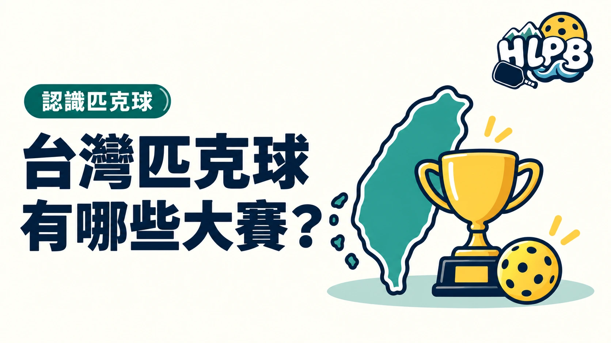

想多認識匹克球，除了自己打，也可以看看台灣不同形式的賽事。以下挑幾個有公開資料的例子，不是規模排名。
台中國際匹克球公開賽
2026 年訂於 10/14–17 在台中國際網球中心舉行，規劃團體、單打、雙打與混雙。市府預估約 1,300 名選手參賽，團體賽導入 MiLP 賽制。
來源：台中市政府公告。
臺灣盃匹克球公開賽
2026 年賽事已於 1/30–2/1 在宜蘭舉行，由中華民國匹克球總會主辦，設不同程度的混合團體組。
來源：i運動資訊平台。
TMLP 全國巡迴積分賽
2026 年官方列出多站賽事，包含男雙、女雙與混雙，另規劃年終積分邀請賽。
來源：TMLP 年度賽事。
AEPL 亞洲菁英匹克球聯盟
2026 創始賽季採城市巡迴形式，首站在台中登場，六支隊伍參與，適合從隊伍對抗的角度認識比賽。
來源：台中市政府 AEPL 報導。
想參賽，先看程度資格與組別。想觀賽，則先確認賽程、入場方式或轉播公告。賽事名稱相似，不代表主辦單位、規則與報名條件相同。
最後查證：2026-10-05｜資料來源：台中市政府、i運動資訊平台、TMLP 官方
返回文章列表